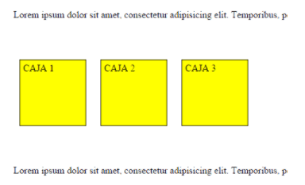

Propiedades básicas de CSS, Display: inline, block, inline-block

Propiedades básicas de CSS, Display: inline, block, inline-block |
|
Cambio de tipo de visualización y un tercer tipo intermedio
Bien, aparte de este comportamiento por defecto, es posible cambiar el modo en el que se visualiza/renderiza cualquier elemento HTML de una página usando la propiedad CSS llamada display.
Esta propiedad puede tomar muchos valores diferentes, pero los más comunes son estos tres:
Así por ejemplo, aunque tengamos una etiqueta span que se renderiza en línea por defecto, si le aplicamos la propiedad display:block; se renderizará como un bloque, es decir, sería exactamente igual que si hubiésemos puesto un div.
El tercer valor de la lista anterior es muy interesante ya que permite obtener un comportamiento intermedio entre los otros dos. Los elementos inline-block fluyen con el texto y demás elementos como si fueran elementos en-línea y además respetan el ancho, el alto y los márgenes verticales. Son lo mejor de los dos mundos.
Así, si por ejemplo redefinimos la etiqueta span de esta manera y volvemos a refrescar la página del principio, lo que veríamos por pantalla es esto:
|  |
Fíjate en que ahora se respetan todas las propiedades (ancho, alto y margen vertical), pero los elementos siguen estando en la misma línea.
|
Todos los derechos reservados @Unad Universidad Nacional Abierta y a Distancia UNAD - Sede José Celestino Mutis Calle 14 Sur No. 23 - 14 Restrepo - Bogotá D.C. |